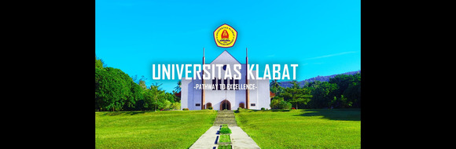

Project Final Front-End Sem Ganjil 2023/2024
Posted By: Admin On December 1st, 2023 In Freebies.
Tahun 1965 Universitas Klabat (UNKLAB) didirikan dengan nama Perguruan Tinggi Klabat
(PTK) yang dibina dan diawasi oleh Gereja Masehi Advent Hari Ketujuh (GMAHK) melalui
Yayasan Perguruan Tinggi Klabat yang berlokasi di Kecamatan Airmadidi,
Minahasa, Sulawesi Utara.
Unklab Daily adalah suatu website yang dikembangkan bagi masyarakat unklab
mengenai berita akademis, non-akademis, nasional, bahkan internasional
yang terjadi di sekitar unklab. Tujuan kami adalah untuk memberikan informasi
yang terupdate kepada semuanya, tak terkecuali kepada mahasiswa, mahasiswi, dan
dosen agar tetap terupdate mengenai informasi seputar kampus kita yang tercinta
ini.